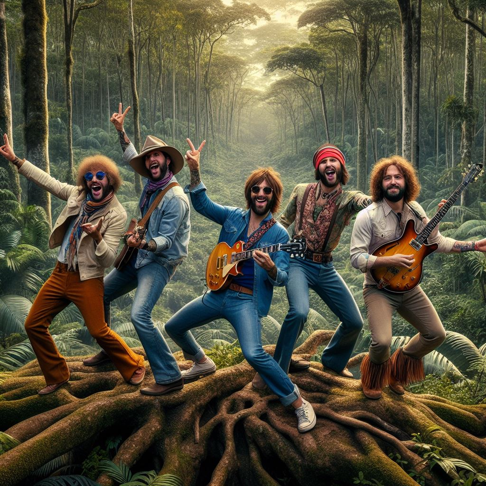

A banda
O Sabor Único da Música Brasileira mos regionais, a banda se destaca no cenário independente por sua originalidade e letras que contam histórias do cotidiano e do misticismo do interior do Brasil.
Os Jabuticabanos Radicais
Os Jabuticabanos Radicais nasceram da mistura improvável entre música experimental e histórias que poderiam ter saído de um boteco de beira de estrada. A banda surgiu quando três amigos descobriram que tinham a mesma mania estranha: transformar qualquer conversa aleatória em letra de música. O nome veio de um comentário interno, daqueles que ninguém leva a sério, mas que teima em virar identidade.
O grupo cresceu rápido no cenário independente por não ter medo de ousar. Misturam ritmos brasileiros com arranjos eletrônicos crus, solos que parecem improviso mas são calculados, e letras que fazem rir antes de fazer pensar. A proposta é simples: música que não pede permissão para existir.
Ao longo dos anos, a banda colecionou apresentações em festivais alternativos, bares minúsculos e eventos comunitários. Cada show vira um laboratório improvisado; cada música, um experimento diferente. Essa abordagem deixou os Jabuticabanos conhecidos não por tentarem agradar — mas por ousarem não agradar.
“Quem tem pressa vira moda. Quem é estranho vira eterno.”— Jabuticabano
Hoje, o trio vive numa fronteira peculiar entre o cômico, o poético e o absurdo. A estética da banda abraça imperfeições, valoriza improviso e trata cada falha como parte do processo criativo. São radicais não por causa da rebeldia, mas pela insistência em permanecer estranhos em um mundo que tenta padronizar tudo.